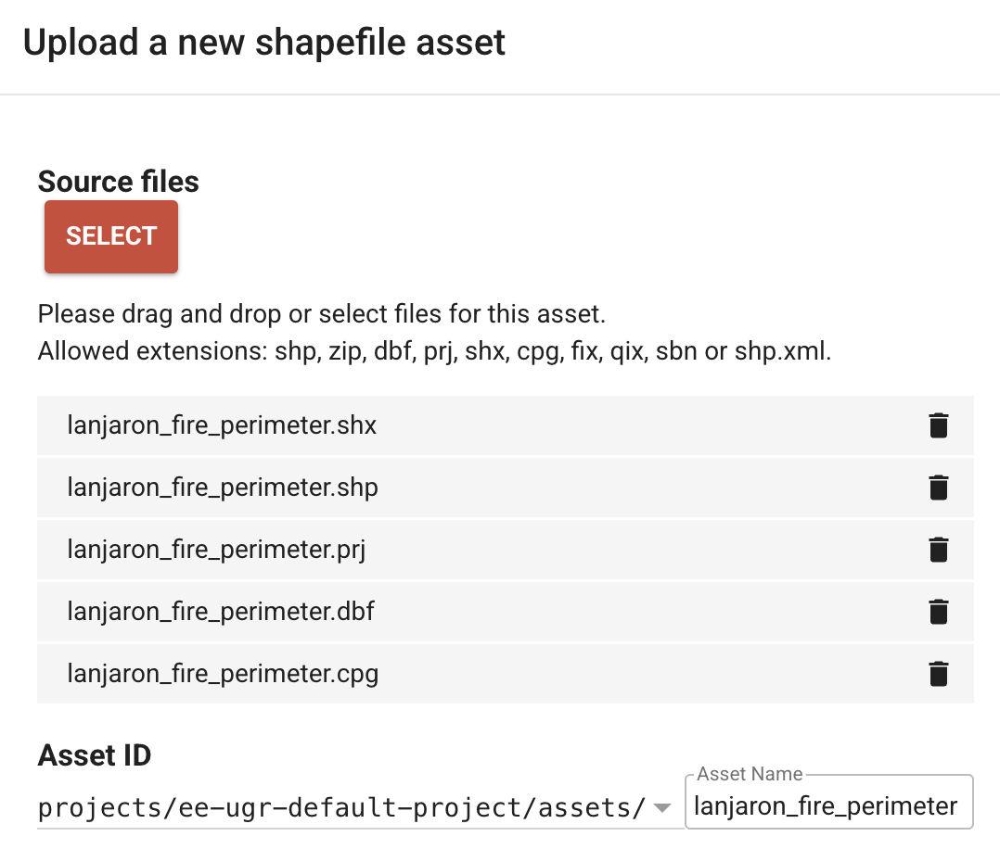

Estudio de un área incendiada con Google Earth Engine
![]()
Esta sesión en Google Earth Engine (GEE) analiza un incendio forestal en la región de Sierra Nevada, España, utilizando imágenes satelitales de Landsat 5 para evaluar el impacto del fuego.
Se calculan índices tales como el NDVI (Índice de Diferencias Normalizadas de la Vegetación) y dNBR (diferencia en el Índice de zonas quemadas normalizado antes y después del incendio).
Este tipo de análisis se aplica para la evaluación y monitorización de incendios forestales mediante análisis de imágenes satelitales.
Los mapas de severidad de zonas quemadas pueden ayudar a elaborar planes de rehabilitación y restauración tras el incendio.
- Se pueden utilizar para estimar también la probabilidad de futuros impactos aguas abajo debido a inundaciones, deslizamientos de tierra y erosión del suelo.
Flujo de trabajo en GEE:
1. Área de estudio
Subimos la capa en formato shapefile con el área del incendio como un Asset de GEE.

Configuramos el mapa base en modo híbrido, lo muestra una combinación de imágenes satelitales y etiquetas de carreteras y núcleos de población.
// Set map options to 'HYBRID'
Map.setOptions('HYBRID');Cargamos el perímetro oficial del incendio desde una colección vectorial (FeatureCollection).
// Official perimeter of the fire
var fire = ee.FeatureCollection('projects/ee-ugr-default-project/assets/lanjaron_fire_perimeter');¿Has puesto el nombre de tu proyecto?
Cargamos también el área del Parque Natural de Sierra Nevada (PNSN) desde una base de datos de áreas protegidas (WDPA), filtrando por su ID (WDPAID).
var snev = ee.FeatureCollection('WCMC/WDPA/current/polygons')
.filter(ee.Filter.eq('WDPAID', 555722086));Definimos una pequeña área quemada como un polígono (ee.Geometry.Polygon), que será usada para analizar la evolución temporal del NDVI.
// Burned area to plot temporal evolution of NDVI
var Ejemplo_Area_quemada = ee.Geometry.Polygon(
[[[-3.4673145342930822, 36.96583376884777],
[-3.4673145342930822, 36.9645993507799],
[-3.464353375540641, 36.9645993507799],
[-3.464353375540641, 36.96583376884777]]]);Centramos el mapa en el área del incendio con un nivel de zoom de 12.
// Center map on Sierra Nevada
Map.centerObject(fire, 12);Visualizamos el área de estudio en el contexto del PNSN.
Map.addLayer(snev,{},'Perímetro del PNSN');
Map.addLayer(fire,{},'Perímetro del incendio'); 2. Filtros de imágenes satelitales
Filtramos imágenes entre julio y octubre para evitar la influencia de la nieve en los índices de vegetación.
// Filter by months (From July to October to avoid snow periods)
var months = ee.Filter.calendarRange(7, 10, 'month');Definimos un umbral de cobertura nubosa máxima del 20% para seleccionar imágenes con menos interferencia de nubes.
// Cloud cover threshold
var cloudCover = 20;3. Carga de imágenes Landsat-5
Cargamos imágenes de Landsat 5 (LANDSAT/LT05/C02/T1_L2) entre 1984 y 2012, filtrando por:
- Región del incendio (
fire) - Fecha de adquisición
- Cobertura nubosa (
CLOUD_COVER) - Rango de meses (julio-octubre)
var Landsat5 = ee.ImageCollection('LANDSAT/LT05/C02/T1_L2')
.filterBounds(fire)
.filterDate('1984-10-01', '2012-06-01')
.filterMetadata('CLOUD_COVER', 'less_than', cloudCover)
.filter(months);4. Cálculo de índices espectrales
Generamos una función para calcular el índice normalizado de zonas quemadas (NBR):
\[NBR=(SR_{B4}−SR_{B7})/(SR_{B4}+SR_{B7})\]
- El NBR es un índice diseñado para resaltar las áreas quemadas en zonas de grandes incendios.
- Las bandas \(SR_{B4}\) (infrarrojo cercano - NIR) y \(SR_{B7}\) (infrarrojo de onda corta 2 - SWIR2) se usan para detectar áreas quemadas (ver documentación asociada a las bandas de L5).
- Las zonas quemadas recientemente muestran una baja reflectancia en el NIR y una alta reflectancia en el SWIR:
- Un valor alto de NBR indica una vegetación sana.
- Un valor bajo indica terreno desnudo y zonas quemadas recientemente.
- Las zonas no quemadas suelen tener valores cercanos a cero.

- El resultado se añade como una nueva banda.
var addNBR = function(image) {
var NBR = image.normalizedDifference(['SR_B4', 'SR_B7']).rename('NBR');
return image.addBands(NBR).copyProperties(image, ['system:time_start']);
}Generamos una función para calcular el índice de diferencias normalizadas de la vegetación (NDVI):
\[NDVI = (SR_{B4} − SR_{B3}) / (SR_{B4} + SR_{B3})\]
Las bandas \(SR_{B4}\) (infrarrojo cercano) y \(SR_{B3}\) (rojo) se usan para analizar la vegetación.
var addNDVI = function(image) {
var NDVI = image.normalizedDifference(['SR_B4','SR_B3']).rename('NDVI');
return image.addBands(NDVI).copyProperties(image, ['system:time_start']);
};Aplicamos las funciones de NDVI y NBR a la colección de imágenes de Landsat 5.
var col_landsat_NDVI = Landsat5.map(addNDVI);
var col_landsat_NBR = col_landsat_NDVI.map(addNBR);
print('col_landsat_NBR',col_landsat_NBR);5. Cálculo de valores pre-incendio y post-incendio
Filtramos imágenes previas al incendio (2004-2005) y calculamos la mediana de NDVI y NBR.
var prefire_col = col_landsat_NBR.filterDate('2004-09-19', '2005-09-20');
// Mostrar la cantidad de imágenes en la colección
print('Número de imágenes en la colección pre-incendio:', prefire_col.size());
// print('Descripción de la primera imagen de la colección pre-incendio:',prefire_col.first())
var prefire = prefire_col.median().clip(fire);
print('Imagen con la mediana del periodo pre-incendio (para todas las bandas):',prefire);Filtramos imágenes después del incendio (2005-2006) calculamos la mediana de NDVI y NBR.
var postfire_col = col_landsat_NBR.filterDate('2005-10-01', '2006-09-30');
print('Número de imágenes en la colección post_fire:', postfire_col.size());
var postfire = postfire_col.median().clip(fire);6. Cálculo del ΔNBR (cambio en NBR)
Calculamos el cambio en NBR (indicador de severidad del incendio).
- La diferencia entre el NBR anterior y posterior al incendio obtenido a partir de las imágenes se utiliza para calcular el delta NBR (dNBR o ∆NBR), que puede utilizarse para estimar la gravedad del incendio.
- Un valor más alto de dNBR indica un daño más severo, mientras que las zonas con valores negativos de dNBR pueden indicar un rebrote tras un incendio.
- Los valores del dNBR pueden variar de un caso a otro, por lo que, si es posible, la interpretación en casos concretos también debe realizarse mediante una evaluación sobre el terreno para obtener los mejores resultados.
var dNBR = prefire.select('NBR').subtract(postfire.select('NBR'));Rampas de color para el dNBR y el NDVI.
- El Servicio Geológico de Estados Unidos (USGS) ha propuesto una tabla de clasificación para interpretar la severidad de los incendios de acuerdo a la siguiente escala de colores e intensidades:

// Primero calculamos los valores mínimo y máximo de dNBR dentro del área del incendio.
var vmin_dNBR = dNBR.reduceRegion(ee.Reducer.min(), fire, 30).get("NBR").getInfo()
print('Min. dNBR value: ' + vmin_dNBR)
var vmax_dNBR = dNBR.reduceRegion(ee.Reducer.max(), fire, 30).get("NBR").getInfo()
print('Max. dNBR value: ' + vmax_dNBR)
// Example color ramp for dNBR
var vis_dNBR = {"min": vmin_dNBR, "max": vmax_dNBR, "palette": ["white", "yellow", "red"]}
// Official style of discrete intervals to apply to the image.
// Source: https://un-spider.org/advisory-support/recommended-practices/recommended-practice-burn-severity/burn-severity-earth-engine
var sld_intervals =
'<RasterSymbolizer>' +
'<ColorMap type="intervals" extended="false" >' +
'<ColorMapEntry color="#ffffff" quantity="-500" label="-500"/>' +
'<ColorMapEntry color="#7a8737" quantity="-250" label="-250" />' +
'<ColorMapEntry color="#acbe4d" quantity="-100" label="-100" />' +
'<ColorMapEntry color="#0ae042" quantity="100" label="100" />' +
'<ColorMapEntry color="#fff70b" quantity="270" label="270" />' +
'<ColorMapEntry color="#ffaf38" quantity="440" label="440" />' +
'<ColorMapEntry color="#ff641b" quantity="660" label="660" />' +
'<ColorMapEntry color="#a41fd6" quantity="2000" label="2000" />' +
'</ColorMap>' +
'</RasterSymbolizer>';
// NDVI color ramp
var ndviPalette = {"min": -0.2, "max": 0.6, "palette": ['FFFFFF', 'CE7E45', 'DF923D', 'F1B555', 'FCD163', '99B718',
'74A901', '66A000', '529400', '3E8601', '207401', '056201',
'004C00', '023B01', '012E01', '011D01', '011301']};7. Visualización en el mapa
Añadimos al mapa:
- dNBR clasificado con una paleta de colores.
- dNBR con una rampa de color continua.
- NDVI pre-incendio y post-incendio con una escala de colores.
Map.addLayer(dNBR.multiply(1000).sldStyle(sld_intervals), {}, 'dNBR classified');
Map.addLayer(Ejemplo_Area_quemada,{},'Ejemplo de área quemada');
Map.addLayer(dNBR, vis_dNBR, 'dNBR color ramp');
Map.addLayer(postfire.select('NDVI'), ndviPalette, 'Median postfire NDVI');
Map.addLayer(prefire.select('NDVI'), ndviPalette, 'Median prefire NDVI');8. Gráfica de evolución del NDVI
Generamos un gráfico del NDVI medio para la zona quemada de ejemplo a lo largo de toda la serie temporal.
print(
ui.Chart.image.seriesByRegion({
imageCollection: col_landsat_NBR.select('NDVI'),
regions: Ejemplo_Area_quemada,
reducer: ee.Reducer.mean(),
scale: 30,
xProperty:'system:time_start',
seriesProperty: 'NDVI'
}).setOptions({
title: 'NDVI Lanjaron',
vAxis: {title:'NDVI'},
hAxis: {title:'Fechas'},
curveType: 'line',
pointSize: 3,
lineWidth: 1
})
); 9. Exportación de datos
Exportamos a Google Drive el dNBR, NDVI pre y post incendio:
dNBR
Export.image.toDrive({
image: dNBR,
description: 'Export_Delta_NBR',
folder: 'GEE_ECOINF',
fileNamePrefix: 'Delta_NBR',
scale: 30,
region: fire.geometry(),
maxPixels: 1e13,
fileFormat: 'GeoTIFF',
crs: 'EPSG:23030'
});NDVI Pre-incendio
Export.image.toDrive({
image: prefire.select('NDVI'),
description: 'Export_prefire_NDVI',
folder: 'GEE_ECOINF',
fileNamePrefix: 'prefire_NDVI',
scale: 30,
region: fire.geometry(),
maxPixels: 1e13,
fileFormat: 'GeoTIFF',
crs: 'EPSG:23030'
});NDVI Post-incendio
Export.image.toDrive({
image: postfire.select('NDVI'),
description: 'Export_postfire_NDVI',
folder: 'GEE_ECOINF',
fileNamePrefix: 'postfire_NDVI',
scale: 30,
region: fire.geometry(),
maxPixels: 1e13,
fileFormat: 'GeoTIFF',
crs: 'EPSG:23030'
});